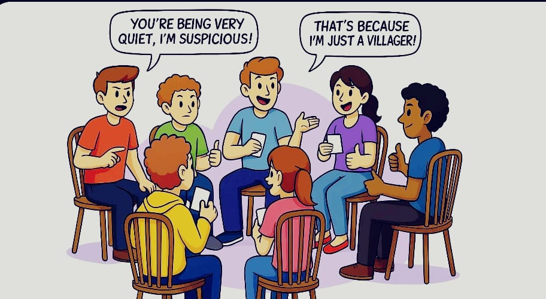

Mafia
Players secretly assume roles of Mafia, a Detective, a Doctor, or Villagers. At night, with all eyes closed, the Mafia eliminate someone, the Detective investigates, and the Doctor saves a player. By day, all players debate and vote out a suspected Mafia member. The game ends when all Mafia are voted out, or the Mafia outnumber the rest.

Setup
- Assign one player to become the host. This player will act as the narrator for the game and will not participate in playing the actual game (take turns with this role).
- Everybody should sit in a circle or around some sort of table.
- Press the 'Let's Play' button on this page and follow the on-screen directions to assign everybody their secret identities.
Night Phase
- Instruct all players to close their eyes. Then, ask the Mafia members to open their eyes and silently agree on one player to eliminate. Once they have decided, the Mafia members should close their eyes again.
- Next, ask the Detective to open their eyes and point to one player to investigate. The host will give a thumbs up if the chosen player is a Mafia member, or a thumbs down if they are not. Afterward, instruct the Detective to close their eyes.
- Now, ask the Doctor to open their eyes and point to the player they wish to 'save' for the night. This chosen player will survive an attack from the Mafia. Then, instruct the Doctor to close their eyes.
Day Phase
- After all players have opened their eyes, announce the outcome of the night. If the Doctor saved the Mafia's target, state that no one was eliminated during the night. If the Mafia's target was not saved, instruct the targeted player to reveal their role, noting that they are now out of the game. While eliminated players can no longer participate, they are encouraged to silently watch the remainder of the game.
- Then, the discussion phase of the game begins where all players openly discuss the events of the night and previous rounds. The discussion can be as long as needed, but should be kept civil. For example, a player might express doubt about someone's behavior, saying something like "I find it strange that Player X was very quiet during the last round; maybe they were trying to hide something." Another player might offer counterarguments or theories, providing their reasoning. The aim is to decide who voted against the Mafia in the previous rounds. The length of the discussion is up to the host. Ensure that all players have a chance to share their thoughts. Once the host is ready to proceed, they should announce the end of the discussion, reminding that all players have the opportunity to speak and that the conversation stays respectful and focused.
Voting Phase
- After the day's discussion, hold a vote to decide which player the group believes is part of the Mafia. Each player will cast their vote, and the player with the most votes is then eliminated from the game and must reveal their role. If the eliminated player is a Mafia member, the game continues. If not, the game also continues, but the remaining players must be more cautious in their next round of discussions and voting.
Conclusion of the Game
As the cycles of Night and Day Phases progress in Mafia, the game becomes increasingly intense with more players being eliminated. This continues until the game reaches a decisive end under one of the following conditions:
Mafia Victory:
- Outnumber: The Mafia achieves victory and the game ends when the number of Mafia members is equal to or greater than the number of remaining non-Mafia players. At this point, the Mafia's influence is too strong to be overturned, and they dominate the game.
Village Victory:
- Elimination of Mafia: The non-Mafia players—comprising the Detective, Doctor, and Villagers—claim victory by successfully identifying and eliminating all of the Mafia members through the Voting Phases.
Announcing the Results:
Following the end of the game, bring all players together to announce the results and reveal the roles of the eliminated players. This moment serves as an opportunity for players to reflect on the game and share their thoughts on the outcome. Consider taking a group photo to commemorate the final outcome. Celebrate the winning side, and encourage a friendly discussion to wrap up the session.
What If Scenarios
- What if the Detective is eliminated? The game continues without the detective's investigation ability, making it more challenging for the non-Mafia players to identify the Mafia members.
- What if the Doctor successfully saves someone? If the Doctor successfully saves the Mafia's target, the host will announce in the morning that no one has been eliminated.
- What if the Mafia can't agree on a target? The Host should give the Mafia a limited amount of time to make their decision. If the Mafia still can't agree, the host can either have them skip their turn or decide that the first person they point to is their choice.
- What if the Doctor tries to save themselves and they are the Mafia's target? Depending on the variant of the game you're playing, this is usually allowed. The Doctor would survive the Mafia's attack that night.
- What if a player accidentally reveals their role? This could be left to the discretion of the game's host. Some hosts will not allow the game to continue as it can add an interesting twist. The host might choose to restart the game.
- What if the Mafia member is the first one to be lynched? The game continues until all Mafia members are eliminated or the number of Mafia members equals the number of non-Mafia players.
- What if the Detective investigates a Mafia member who was saved by the Doctor? The Detective would know that the player is a Mafia member, but they did not die because of the Doctor's save. This can change a player's strategy.
- What if there is a tie during the voting phase? The host can decide how to handle ties. This may include re-voting, a showdown between the tied players, or randomly choosing one player to be eliminated.
- What if a player talks out of turn or shares information after they have been eliminated? The host should remind players of the rules and ask them not to speak once they've been eliminated. Repeated offenses might result in penalties, such as excluding the player from future games.